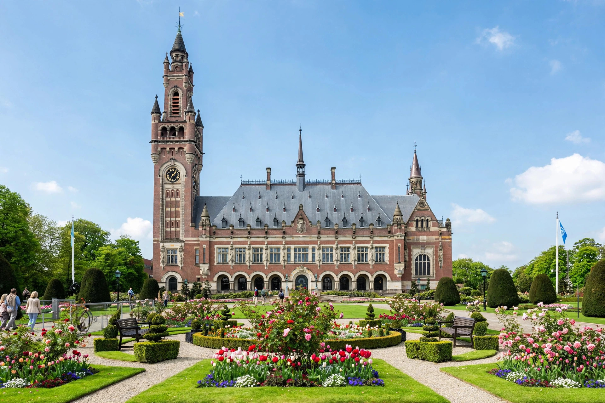

International court
International courts are formed by treaties between nations, or under the authority of an international organisation such as the United Nations, and include permanent courts, ad hoc tribunals, and arbitral bodies. They adjudicate disputes involving states, international organisations, and in some cases individuals, applying international law.

Principal courts
- International Court of Justice (ICJ) — the principal judicial organ of the United Nations, seated at the Peace Palace in The Hague. It decides contentious cases between states and gives advisory opinions. Only states may be parties in contentious cases.
- International Criminal Court (ICC) — established by the Rome Statute of 1998, it prosecutes individuals for genocide, crimes against humanity, war crimes, and the crime of aggression.
- European Court of Human Rights — hears applications alleging violations of the European Convention on Human Rights by member states of the Council of Europe.
- International Tribunal for the Law of the Sea — seated in Hamburg, it decides disputes arising under the UN Convention on the Law of the Sea.
Ad hoc tribunals
The Security Council created the International Criminal Tribunal for the former Yugoslavia (1993) and for Rwanda (1994) to prosecute atrocities in those conflicts. Hybrid courts, such as the Special Court for Sierra Leone and the Extraordinary Chambers in the Courts of Cambodia, combine international and domestic elements. Military tribunals at Nuremberg and Tokyo after the Second World War were early forerunners.
Jurisdiction and enforcement
Unlike domestic courts, international courts generally depend on the consent of states to their jurisdiction and have no police force of their own; enforcement relies on state cooperation, diplomatic pressure, or the UN Security Council.
See also
Categories: International courts and tribunals | International law